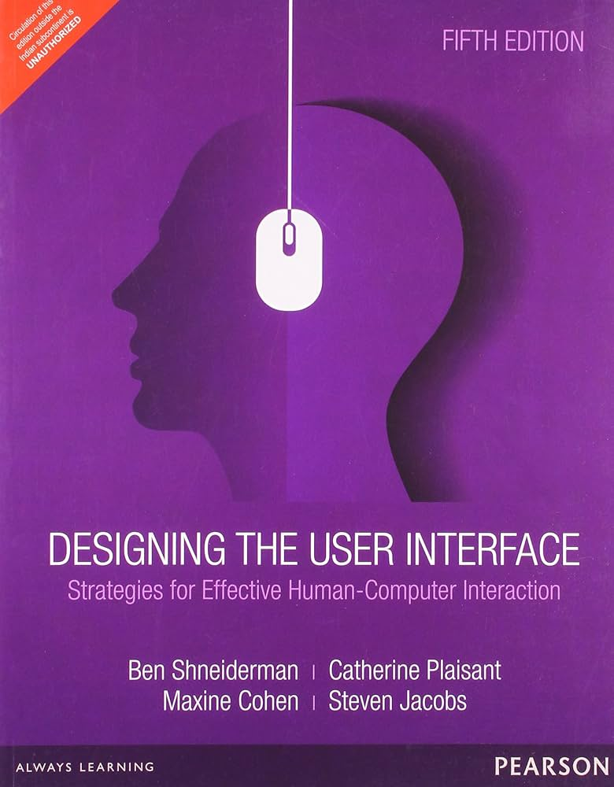
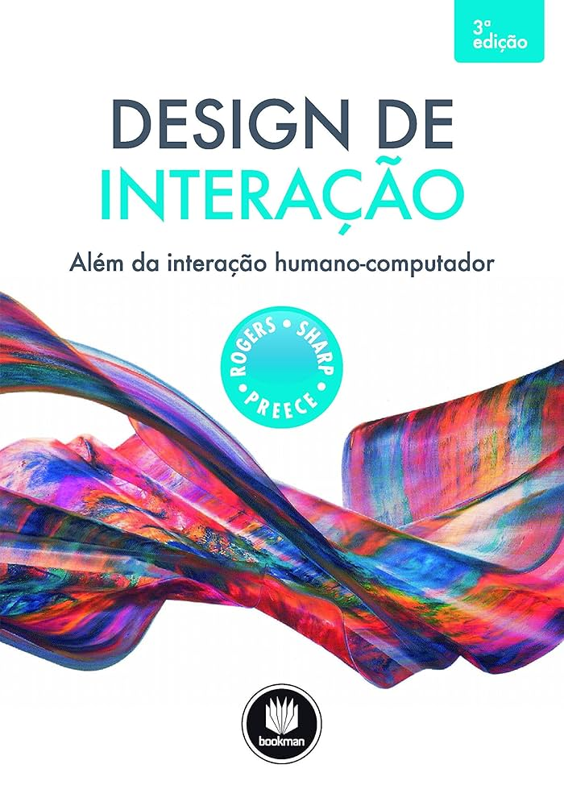

08 DEZ 2024
Design de interface: aspectos visuais
Gustavo Costa
Victor Brandi
Introdução
O design de interfaces visuais desempenha um papel central na criação de sistemas interativos eficazes. Ele requer não apenas o domínio de princípios estéticos, mas também a compreensão prática de como diferentes componentes, como widgets e elementos gráficos, podem ser utilizados para promover uma interação fluida e eficiente. Mais do que a estética isolada, é essencial considerar como a interação geral funciona como um todo, garantindo que o sistema atenda às necessidades dos usuários. Este texto explora as linguagens de comando, interfaces gráficas, diretrizes de design e a visualização de dados, aspectos fundamentais para um design bem-sucedido, culminando em reflexões finais sobre a integração dessas abordagens.
Linguagens de comando
As linguagens de comando são uma das formas mais tradicionais de interação entre usuários e sistemas computacionais. Elas permitem a execução de tarefas complexas por meio de entradas textuais precisas, tornando-se ferramentas poderosas para usuários avançados, como programadores e administradores de sistemas. Contudo, seu uso apresenta desafios significativos, especialmente para iniciantes, devido à necessidade de memorização de comandos específicos e sintaxe rigorosa.
Embora possam parecer obsoletas diante de interfaces gráficas modernas, as linguagens de comando continuam relevantes, especialmente em áreas que exigem automação e controle detalhado. Ferramentas como autocompletar e documentação integrada podem reduzir a barreira de entrada para novos usuários, tornando a interação mais acessível. Ainda assim, a usabilidade dessas interfaces depende de um equilíbrio entre flexibilidade e clareza no feedback ao usuário, garantindo que erros sejam compreensíveis e corrigíveis.
Interfaces Gráficas do Usuário
O sucesso das GUIs depende do domínio dos widgets disponíveis e da habilidade do designer em
utilizá-los adequadamente. Por exemplo, botões, caixas de seleção e barras de rolagem não apenas
precisam ser visualmente atraentes, mas também intuitivos em seu funcionamento. Além disso, o
uso de
cores, contrastes e espaçamento deve ser estrategicamente planejado para guiar a atenção do
usuário
e garantir acessibilidade, atendendo às necessidades de pessoas com deficiências visuais ou
outras
limitações.
As interfaces gráficas do usuário (GUIs) transformaram a interação computacional ao introduzirem
elementos visuais como janelas, ícones, menus e ponteiros, frequentemente referidos pela sigla
WIMP
(Windows, Icons, Menus, Pointer). Esses elementos, combinados com outros objetos gráficos,
permitem
que usuários interajam com sistemas de forma mais intuitiva, mesmo sem conhecimentos técnicos
aprofundados.
Diretrizes de Design de Interface
O design de interfaces não se baseia apenas na intuição; ele é orientado por diretrizes que
emergem de estudos em psicologia, percepção e design gráfico. Essas diretrizes ajudam os
designers a criar sistemas que sejam não apenas esteticamente agradáveis, mas também funcionais
e fáceis de usar.
Princípios como consistência, feedback imediato e prevenção de erros são fundamentais para o
sucesso de uma interface. A consistência garante que os usuários possam prever o comportamento
do sistema, enquanto o feedback os informa sobre o resultado de suas ações. Além disso, a
aplicação de princípios de design gráfico, como alinhamento e hierarquia visual, ajuda a
organizar informações de maneira clara, facilitando a navegação.
Ferramentas de design, como bibliotecas e frameworks, fornecem componentes pré-definidos que
seguem essas diretrizes, acelerando o processo de desenvolvimento e assegurando a conformidade
com padrões de usabilidade reconhecidos.
Visualização de Dados
Quando grandes volumes de informações precisam ser apresentados, as visualizações interativas
desempenham um papel crucial no design de sistemas. Elas transformam dados complexos em
representações visuais que são mais fáceis de interpretar e explorar.
Gráficos, mapas e diagramas interativos permitem que os usuários identifiquem padrões, analisem
tendências e tomem decisões informadas. A interatividade, como a capacidade de filtrar dados,
ampliar detalhes ou reorganizar visualizações, aumenta a eficácia dessas representações. No
entanto, o design de visualizações requer um cuidado especial para evitar sobrecarga cognitiva,
utilizando elementos gráficos de forma equilibrada e intuitiva.
Um exemplo notável é o uso de cores e formas para categorizar informações em mapas de calor ou
diagramas hierárquicos, facilitando a identificação rápida de áreas de interesse. Esses recursos
são especialmente úteis em áreas como análise financeira, monitoramento de redes e ciência de
dados, onde a quantidade de informações pode ser avassaladora.
Referências
Livro interação humano-computador
Designing the user interface: strategies for effective human-computer interaction
Design de interação: além da interação humano-computador
Considerações finais
O design de sistemas interativos exige um entendimento aprofundado das ferramentas e princípios que
regem as linguagens de comando, as interfaces gráficas, as diretrizes de design e a visualização de
dados. Cada um desses elementos contribui para a criação de experiências de usuário que sejam ao
mesmo tempo intuitivas, acessíveis e poderosas.
Embora o foco muitas vezes recaia sobre a aparência visual, é a funcionalidade e a coerência do
sistema como um todo que determinam seu sucesso. Designers devem equilibrar estética, usabilidade e
eficiência, considerando sempre as necessidades e limitações de seus usuários. À medida que a
tecnologia continua a evoluir, o desafio permanece em criar interfaces que sejam inovadoras e
inclusivas, promovendo interações humanas significativas com sistemas complexos.